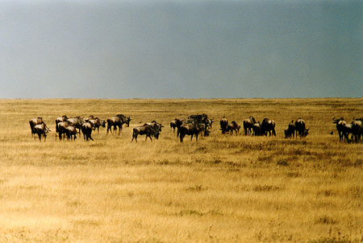
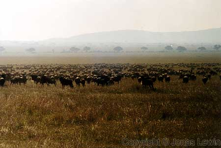
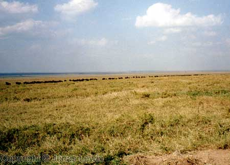

Wildebeests.
|
A
very social animal. They never seem to want to be apart. They really live by
the protection of the number of animals. So they gather in enormous numbers. I can say: You know all these big hordes of Wildebeests that you see on TV. I've seen them in real. They are even more than you see on TV. And even more stupid. If one starts running, the animal behind will also start running, and the animal behind it will also start, and so on. Looks really stupid. These animals are walking in line. And one started running for no apparent reason. Some gaps where created, and the animals started to run, as the animal in front decided to run in that gap. So a few hundred animals did the same thing, when it was it's turn. |